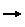
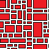
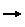
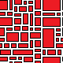

Introduction
DeBroglie is a C# library implementing the Wave Function Collapse algorithm with support for additional non-local constraints, and other useful features.
Wave Function Collapse (WFC) is an constraint-based algorithm for which takes a small input image or tilemap and procedurally generating a larger image in the same style, such as:
 



See the gallery for some visual examples of what DeBroglie can do.
Feature Overview
- "Overlapped" model implementation of WFC
- Non-local constraints allow you to specify other desired properties of the result
- Backtracking support - some WFC implementations immediately give up when a contradiction occurs.
- supports 2d tiles, hex grids, and 3d voxels
What is WFC?
Wave Function Collapse is a constraint based algorithm that generates bitmaps, tilemaps etc one tile at a time, based off a sample image.
The original author of WFC has an excellent explanation of the core algorithm
DeBroglie uses the core idea mostly unchanged, though enhanced in various ways explained in Features.
Installation
DeBroglie is available on NuGet. You can also get binaries in Releases.
For Unity, copy a release binary, or the entire source code, into your Assets/ folder - there are no Unity packages provided.
Usage
To use DeBroglie, select one of the models that controls the generation process.
You then give the model a sample array want to generalize. Or you can specify a model directly.
There's lot of features that can be applied at this point.
The last detail needed is the size of the output image desired.
Then you run a propagator that will generate the output one tile at a time. Depending on the difficulty of the generation, the process can fail and require restarting.
Quick Start (C#)
The DeBroglie library can be downloaded via NuGet. Or it can easily be built from source.
Once you are referencing the library. here's a simple snippet that demonstrates constructing the relevant objects and running them.
// Define some sample data
ITopoArray<char> sample = TopoArray.Create(new[]
{
new[]{ '_', '_', '_'},
new[]{ '_', '*', '_'},
new[]{ '_', '_', '_'},
}, periodic: false);
// Specify the model used for generation
var model = new AdjacentModel(sample.ToTiles());
// Set the output dimensions
var topology = new GridTopology(10, 10, periodic: false);
// Acturally run the algorithm
var propagator = new TilePropagator(model, topology);
var status = propagator.Run();
if (status != Resolution.Decided) throw new Exception("Undecided");
var output = propagator.ToValueArray<char>();
// Display the results
for (var y = 0; y < 10; y++)
{
for (var x = 0; x < 10; x++)
{
System.Console.Write(output.Get(x, y));
}
System.Console.WriteLine();
}
Quick Start (Command Line)
Download the command line application from Releases. The commandline app is available on Windows/Linux/MacOS, but this guide assume you are on windows.
Then download this sample file: sewers.png
{kind=link}
Then, create a json file, sewers.json with the following content. Save it in the same directory as sewers.png.
{
"src": "sewers.png",
"dest": "generated-sewers.png",
"model": {
"type": "overlapping",
"n": 3
},
"periodicInput": true,
"periodic": true,
"symmetry": 8
}
Now run DeBroglie.Console.exe with the json file. To do so, drag the file onto the executable.

Or you can run something like the following in the command line.
path_to_debroglie/DeBroglie.Console.exe path_to_json/sewers.json

Either way, it should create a new image called generated-sewers.png.
Read about the JSON file format for details of what you can do with the JSON file, or browse the samples for inspiration.